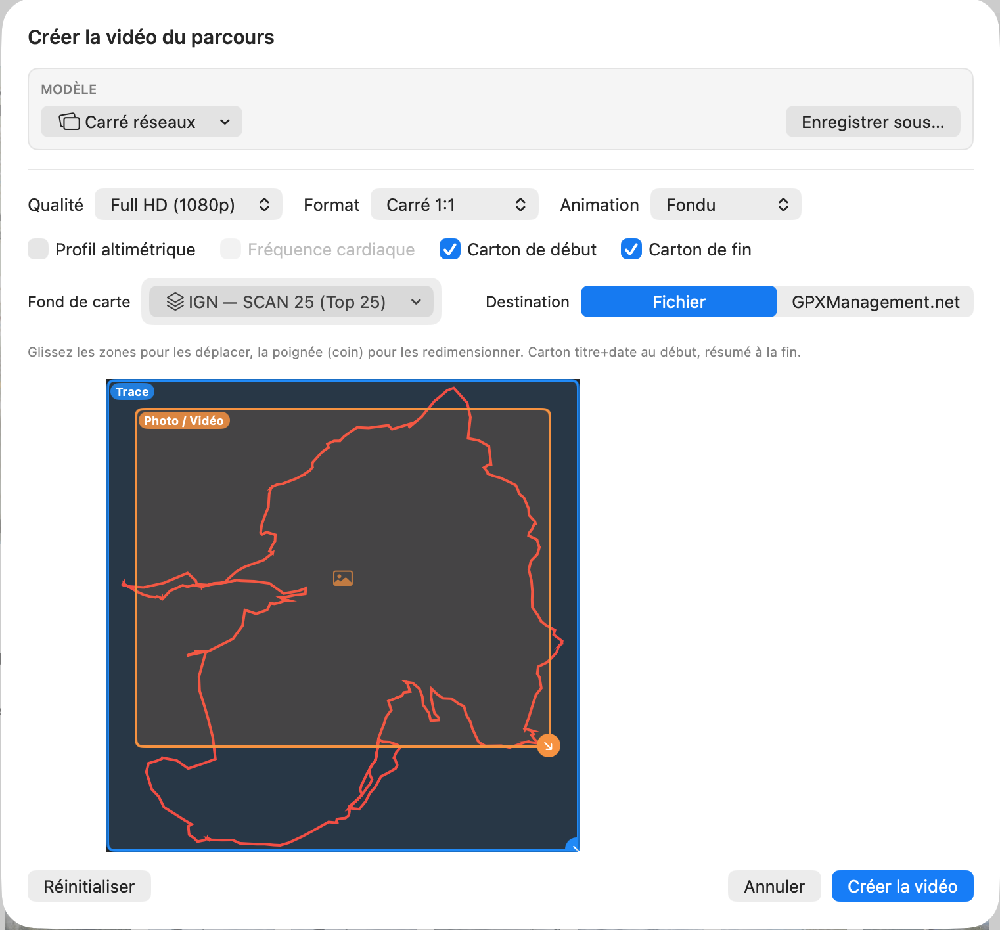
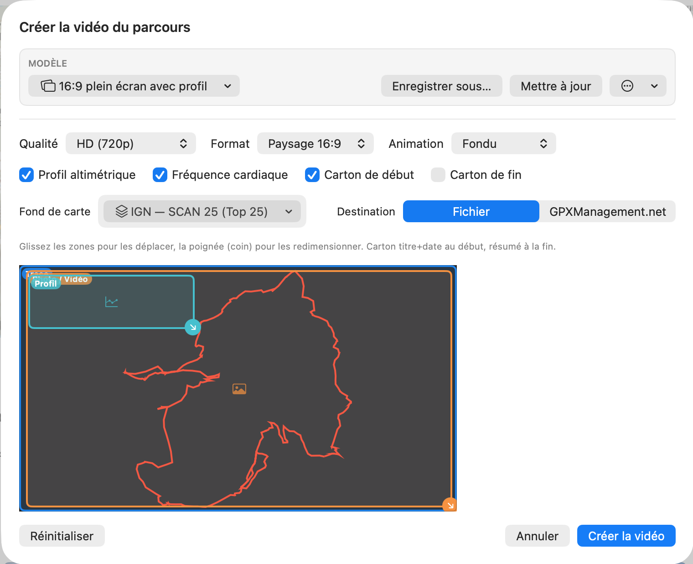
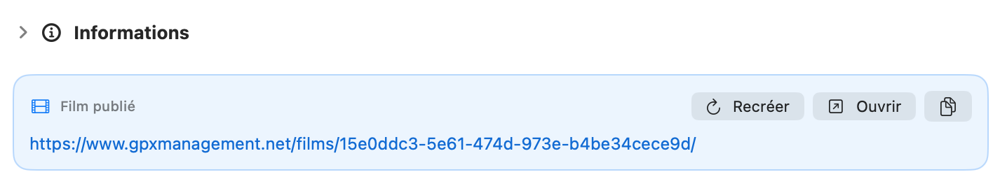

Une vidéo animée où votre trace se dessine sur la carte IGN, avec vos photos et vidéos qui surgissent au bon endroit du parcours, le profil, la fréquence cardiaque, et des cartons de début et de fin.
Lancer la création
Depuis la fiche d'une sortie, cliquez l'icône film 🎬 dans la barre d'outils, ou utilisez le menu Activité ▸ Créer une vidéo…. La fenêtre « Créer la vidéo du parcours » s'ouvre.

📷 Capture à ajouter :aide/film/img/etape-1.pngChoisir le rendu
En haut, partez d'un modèle : prédéfinis « 16:9 côte à côte », « 16:9 plein écran », « Carré réseaux », « Story portrait », ou l'un des vôtres. Puis réglez les trois listes :
Cochez les éléments à inclure : Profil altimétrique, Fréquence cardiaque (si la sortie en contient et qu'un profil est affiché), Carton de début (titre + date) et Carton de fin (résumé de la sortie). Choisissez aussi le Fond de carte (SCAN 25, Plan v2, carte des pentes…).
Composer l'image
Dans l'aperçu de mise en page, glissez chaque zone (carte, photo/vidéo, profil) pour la déplacer, et tirez la poignée de coin pour la redimensionner. Le carton titre + date s'affiche au début, le résumé à la fin.

📷 Capture à ajouter :aide/film/img/etape-4.pngUne mise en page qui vous plaît ? Enregistrer sous… la conserve comme modèle réutilisable (visible dans Mes modèles). Vous pouvez ensuite la Mettre à jour, la Renommer ou la Supprimer. La mention « • modifié » indique que la mise en page diffère du modèle choisi ; Réinitialiser revient à la disposition par défaut du format.
Exporter
Fichier enregistre un .mp4 sur votre Mac (une fenêtre d'enregistrement vous demande le nom et l'emplacement). GPXManagement.net publie directement le film en ligne — gratuit pendant la bêta, sans rien à configurer.
Cliquez « Créer la vidéo » (ou « Créer et publier »). Une barre de progression s'affiche pendant le rendu ; selon la durée du parcours, la qualité et le nombre de médias, cela peut prendre un moment. Le film terminé contient le point animé sur la carte, vos photos et vidéos au bon endroit, le profil et la FC, encadrés par les cartons de début et de fin.
Si vous avez publié sur GPXManagement.net, un encadré « Film publié » apparaît dans les Informations de la sortie, avec le lien et les boutons Recréer (régénérer le film), Ouvrir et copier le lien.

📷 Capture à ajouter :aide/film/img/etape-7.png